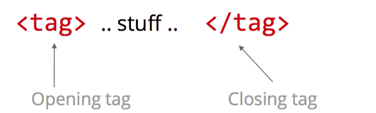
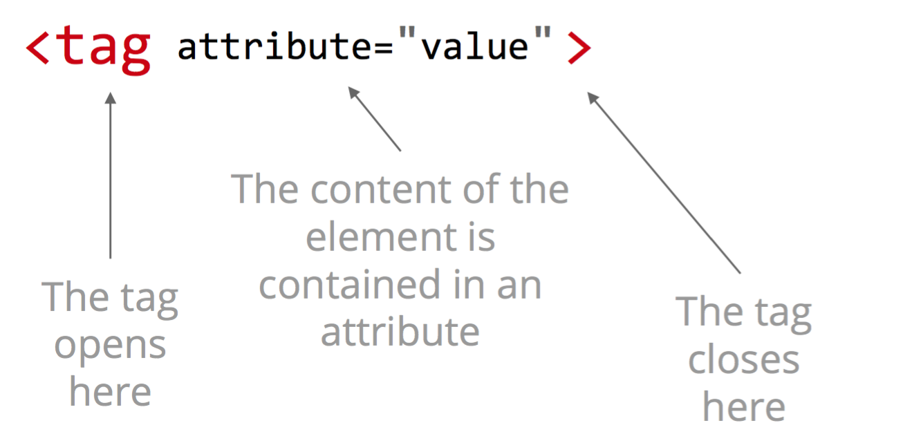

All you need is:
All HTML code have open and close elements, an opening tag goes at the start of the line, where the text follows, however it must end with a closing tag, this can be seen in the diagram below:
Some text editors will automatically do the opening and closing tags for you, by pressing the Tab button. A nice example of an open and close element is "<h1> This is a header </h1>"
All-in-one elements have a tag opening, the content of the element as an attribute and the closing tag all in one element, like the diagram below:
